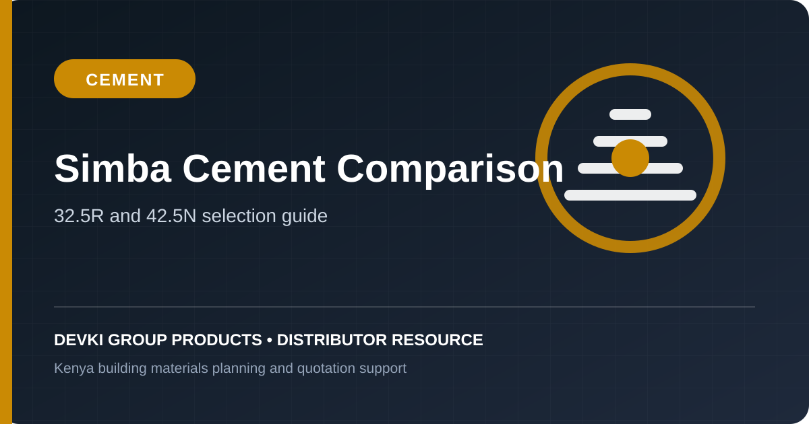

Simba Cement 32.5R vs 42.5N: Complete Builder's Comparison

One of the most frequent questions received by our technical sales desk is: "Should I buy Simba Cement 32.5R or 42.5N for my building project?" Choosing the correct cement grade affects structural integrity, setting speed, workability, and total building budget.
1. Understanding Cement Grade Classifications in Kenya
Under East African Standard KS EAS 18-1, the number (32.5 or 42.5) represents the minimum compressive strength in Megapascals (MPa) achieved by a standard mortar prism after 28 days of laboratory curing.
- 32.5 MPa: Minimum strength of 32.5 N/mm² after 28 days. The "R" stands for High Early Strength.
- 42.5 MPa: Minimum strength of 42.5 N/mm² after 28 days. The "N" stands for Normal Strength Development.
2. When to Use Simba Cement 32.5R (PPC)
Simba Cement 32.5R is a Portland Pozzolana Cement (PPC). It is optimized for general masonry and non-heavy load structural elements:
- Bricklaying, stone walling, and concrete block laying.
- Internal wall plastering and external rendering.
- Floor screeding and domestic walkway paving.
- Single-storey bungalow foundation footings and ground slabs.
3. When to Use Simba Cement 42.5N (OPC)
Simba Cement 42.5N is an Ordinary Portland Cement (OPC CEM I). It is engineered for heavy structural demands:
- Multi-storey reinforced concrete columns and load-bearing pillars.
- Suspended concrete floor slabs and heavy transfer beams.
- Pre-cast concrete culverts, fencing posts, and paving blocks.
- Civil engineering bridges, retaining walls, and water reservoirs.